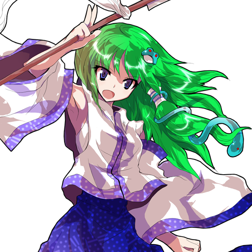

東風谷早苗 코치야 사나에
キャラクター 캐릭터
守矢神社の風祝。丁寧語で明るく真面目。外の世界出身で巨大ロボが好き。諏訪子は「諏訪子様」。
모리야 신사의 바람 무녀. 존댓말을 쓰며 밝고 성실합니다. 바깥 세계 출신으로 거대 로봇을 좋아합니다. 스와코는 「諏訪子様」.
サンプル6（Asamia） 0:39〜0:48
샘플 6 (Asamia) 0:39〜0:48
台詞 대사
掛け声 기합 (14)
| No | ファイル名 | 状況 상황 | 台詞 | 読み | 意味 뜻 |
|---|---|---|---|---|---|
| 1 | vo_sanae_eff_l_01 | 弱攻撃の掛け声 약공격 기합 | えいっ！ | えいっ | 에잇! |
| 2 | vo_sanae_eff_l_02 | 弱攻撃の掛け声 약공격 기합 | はっ！ | はっ | 핫! |
| 3 | vo_sanae_eff_l_03 | 弱攻撃の掛け声 약공격 기합 | やっ！ | やっ | 얍! |
| 4 | vo_sanae_eff_l_04 | 弱攻撃の掛け声 약공격 기합 | たあっ！ | たあっ | 타앗! |
| 5 | vo_sanae_eff_h_01 | 強攻撃の掛け声 강공격 기합 | やあああっ！ | やあああっ | 야아앗! |
| 6 | vo_sanae_eff_h_02 | 強攻撃の掛け声 강공격 기합 | せやあっ！ | せやあっ | 세야앗! |
| 7 | vo_sanae_eff_h_03 | 強攻撃の掛け声 강공격 기합 | えーいっ！ | えーいっ | 에~잇! |
| 8 | vo_sanae_eff_h_04 | 強攻撃の掛け声 강공격 기합 | はあああっ！ | はあああっ | 하아앗! |
| 9 | vo_sanae_eff_w_01 | 強攻撃のひとこと 강공격 한마디 | いきます！ | いきます | 갑니다! |
| 10 | vo_sanae_eff_w_02 | 強攻撃のひとこと 강공격 한마디 | そこです！ | そこです | 거기예요! |
| 11 | vo_sanae_eff_w_03 | 強攻撃のひとこと 강공격 한마디 | 隙ありです！ | すきありです | 빈틈이에요! |
| 12 | vo_sanae_eff_w_04 | 強攻撃のひとこと 강공격 한마디 | 奇跡です！ | きせきです | 기적이에요! |
| 13 | vo_sanae_eff_s_01 | ジャンプ・ダッシュの小さな息 점프·대시 숨소리 | ふっ | ふっ | 흣 |
| 14 | vo_sanae_eff_s_02 | ジャンプ・ダッシュの小さな息 점프·대시 숨소리 | よっ | よっ | 읏차 |
必殺技 필살기 (8)
| No | ファイル名 | 状況 상황 | 台詞 | 読み | 意味 뜻 |
|---|---|---|---|---|---|
| 15 | vo_sanae_Special1_01 | 必殺技1（技名） 필살기 1 (기술 이름) | グレイソーマタージ！ | ぐれいそーまたーじ | 그레이 소마터지! |
| 16 | vo_sanae_Special1_02 | 必殺技1（ひとこと） 필살기 1 (한마디) | 星よ！ | ほしよ | 별이여! |
| 17 | vo_sanae_Special2_01 | 必殺技2（技名） 필살기 2 (기술 이름) | 風起こし！ | かぜおこし | 바람 일으키기! |
| 18 | vo_sanae_Special2_02 | 必殺技2（ひとこと） 필살기 2 (한마디) | 上です！ | うえです | 위예요! |
| 19 | vo_sanae_Special3_01 | 必殺技3（技名） 필살기 3 (기술 이름) | 神の風！ | かみのかぜ | 신의 바람! |
| 20 | vo_sanae_Special3_02 | 必殺技3（ひとこと） 필살기 3 (한마디) | 吹き飛んでください！ | ふきとんでください | 날아가 주세요! |
| 21 | vo_sanae_Special4_01 | 必殺技4（技名） 필살기 4 (기술 이름) | サモンタケミナカタ！ | さもん たけみなかた | 서먼 타케미나카타! |
| 22 | vo_sanae_Special4_02 | 必殺技4（ひとこと） 필살기 4 (한마디) | 御柱、いきます！ | おんばしら いきます | 온바시라, 갑니다! |
スペルカード宣言 스펠카드 선언 (2)
| No | ファイル名 | 状況 상황 | 台詞 | 読み | 意味 뜻 |
|---|---|---|---|---|---|
| 23 | vo_sanae_Spell1_call | スペルカード（超必殺技）1の宣言 스펠카드 1 선언 | 大奇跡「八坂の神風」！ | だいきせき やさかのかみかぜ | 대기적, 야사카의 신풍! |
| 24 | vo_sanae_Spell2_call | スペルカード（超必殺技）2の宣言 스펠카드 2 선언 | 開海「海が割れる日」！ | かいかい うみがわれるひ | 개해, 바다가 갈라지는 날! |
システム・挑発 시스템·도발 (1)
| No | ファイル名 | 状況 상황 | 台詞 | 読み | 意味 뜻 |
|---|---|---|---|---|---|
| 25 | vo_sanae_Taunt | 挑発 도발 | 巨大ロボ、かっこいいですよね！ | きょだいろぼ かっこいいですよね | 거대 로봇, 멋있죠! |
キャラクター固有 캐릭터 고유 (2)
| No | ファイル名 | 状況 상황 | 台詞 | 読み | 意味 뜻 |
|---|---|---|---|---|---|
| 26 | vo_sanae_SpecialCancel_01 | 必殺技を別の必殺技でキャンセル 필살기를 필살기로 캔슬 | 常識に囚われません！ | じょうしきに とらわれません | 상식에 얽매이지 않아요! |
| 27 | vo_sanae_SpecialCancel_02 | 必殺技を別の必殺技でキャンセル 필살기를 필살기로 캔슬 | 奇跡、もう一回！ | きせき もういっかい | 기적, 한 번 더! |
被ダメージ・KO 피격·KO (6)
| No | ファイル名 | 状況 상황 | 台詞 | 読み | 意味 뜻 |
|---|---|---|---|---|---|
| 28 | vo_sanae_hurt_l_01 | 小ダメージ 약한 피격 | きゃっ！ | きゃっ | 꺅! |
| 29 | vo_sanae_hurt_l_02 | 小ダメージ 약한 피격 | いたっ！ | いたっ | 아얏! |
| 30 | vo_sanae_hurt_l_03 | 小ダメージ 약한 피격 | うっ！ | うっ | 윽! |
| 31 | vo_sanae_hurt_h_01 | 大ダメージ・吹き飛び・投げられ 강한 피격·날아감·잡힘 | きゃあああっ！ | きゃあああっ | 꺄아악! |
| 32 | vo_sanae_hurt_h_02 | 大ダメージ・吹き飛び・投げられ 강한 피격·날아감·잡힘 | ああああっ！ | ああああっ | 아아앗! |
| 33 | vo_sanae_hurt_h_03 | 大ダメージ・吹き飛び・投げられ 강한 피격·날아감·잡힘 | うああああっ！ | うああああっ | 으아아앗! |
ラウンド・勝敗 라운드·승패 (7)
| No | ファイル名 | 状況 상황 | 台詞 | 読み | 意味 뜻 |
|---|---|---|---|---|---|
| 34 | vo_sanae_Intro_01 | 登場（共通） 등장(공통) | 守矢の風祝、早苗です！ | もりやの かぜはふり さなえです | 모리야의 바람 무녀, 사나에예요! |
| 35 | vo_sanae_Intro_02 | 登場（共通） 등장(공통) | 奇跡、お見せしますね！ | きせき おみせしますね | 기적을 보여 드릴게요! |
| 36 | vo_sanae_Intro_03 | 登場（共通） 등장(공통) | 信仰、集めさせてもらいます！ | しんこう あつめさせてもらいます | 신앙 좀 모아 갈게요! |
| 37 | vo_sanae_RoundWin_01 | ラウンド勝利（短く） 라운드 승리(짧게) | やりました！ | やりました | 해냈어요! |
| 38 | vo_sanae_RoundWin_02 | ラウンド勝利（短く） 라운드 승리(짧게) | 絶好調です！ | ぜっこうちょうです | 컨디션 최고예요! |
| 39 | vo_sanae_Win_01 | 試合に勝利 게임 승리 | これが、現人神の奇跡です！ | これが あらひとがみの きせきです | 이게 현인신의 기적이에요! |
| 40 | vo_sanae_Win_02 | 試合に勝利 게임 승리 | 勝ちました！ ご参拝お待ちしてます！ | かちました ごさんぱい おまちしてます | 이겼어요! 참배 기다릴게요! |
対戦相手別 상대별 (6)
| No | ファイル名 | 状況 상황 | 台詞 | 読み | 意味 뜻 |
|---|---|---|---|---|---|
| 41 | vo_sanae_Intro_reimu_a | 登場：霊夢戦（先に話す。霊夢が「決めるまでもないわ。本家はうちよ。」と返します） 등장: 레이무전 (먼저 말함. 레이무의 응답 「가릴 것도 없어. 원조는 우리야.」) | 霊夢さん、どっちの巫女が上か決めましょう！ | れいむさん どっちのみこがうえか きめましょう | 레이무 씨, 어느 쪽 무녀가 위인지 가려요! |
| 42 | vo_sanae_Intro_reimu_b | 登場：霊夢戦（霊夢の「うちの信者を取らないで、早苗。」に返す） 등장: 레이무전 (레이무의 「신자 빼 가지 마, 사나에.」에 대답) | 取ってません！ 奇跡に惹かれて来るんです！ | とってません きせきに ひかれてくるんです | 안 뺏었어요! 기적에 끌려 오는 거예요! |
| 43 | vo_sanae_Win_reimu | 霊夢に勝利 레이무에게 승리 | 分社、置かせてもらいますね！ | ぶんしゃ おかせてもらいますね | 분사, 하나 세워 둘게요! |
| 44 | vo_sanae_Intro_suwako_a | 登場：諏訪子戦（先に話す。諏訪子が「いいね。本気の早苗、見せてごらん。」と返します） 등장: 스와코전 (먼저 말함. 스와코의 응답 「좋아. 진심인 사나에, 보여 줘 봐.」) | 諏訪子様、今日は本気でいきますよ！ | すわこさま きょうは ほんきでいきますよ | 스와코 님, 오늘은 진심으로 갈게요! |
| 45 | vo_sanae_Intro_suwako_b | 登場：諏訪子戦（諏訪子の「早苗、ご先祖様の実力、見せたげる。」に返す） 등장: 스와코전 (스와코의 「사나에, 조상님 실력 보여 줄게.」에 대답) | ご先祖様でも、手加減しませんよ！ | ごせんぞさまでも てかげんしませんよ | 조상님이라도 봐 드리지 않을 거예요! |
| 46 | vo_sanae_Win_suwako | 諏訪子に勝利 스와코에게 승리 | やりました！ 神奈子様に報告です！ | やりました かなこさまに ほうこくです | 해냈어요! 카나코 님께 보고해야지! |
アナウンサー（DLC・追加収録。両プレイヤーに向けた進行役として、短くはっきり） 아나운서 (DLC 추가 녹음. 두 플레이어 모두에게 말하는 진행자로, 짧고 또렷하게) (6)
アナウンサーの場面の映像です（咲夜のAI仮音声）。全員共通の映像なので、台詞は下の表を見てください。
아나운서 장면 영상입니다(사쿠야 AI 임시 음성). 모든 캐릭터 공용 영상이라 대사는 아래 표를 보세요.
| No | 映像 | ファイル名 | 状況 상황 | 台詞 | 読み | 意味 뜻 |
|---|---|---|---|---|---|---|
| 47 | vo_ann_sanae_Ready_01 | ラウンド開始の呼びかけ（毎ラウンド・2種） 라운드 시작 호출 (매 라운드, 2가지) | 準備はいいですか？ | じゅんびはいいですか | 준비됐나요? | |
| 48 | vo_ann_sanae_Ready_02 | ラウンド開始の呼びかけ（毎ラウンド・2種） 라운드 시작 호출 (매 라운드, 2가지) | 両者、構えて！ | りょうしゃ かまえて | 양측, 자세 잡고! | |
| 49 | vo_ann_sanae_Fight_01 | 試合開始の合図（ひとこと・2種） 시작 신호 (한 단어, 2가지) | 始めっ！ | はじめっ | 시작! | |
| 50 | vo_ann_sanae_Fight_02 | 試合開始の合図（ひとこと・2種） 시작 신호 (한 단어, 2가지) | 勝負！ | しょうぶ | 승부! | |
| 51 | vo_ann_sanae_KO | KO（決着の一撃） KO (결정타) | 決着！ | けっちゃく | 결착! | |
| 52 | vo_ann_sanae_TimeUp | タイムアップ 타임업 | 時間切れです！ | じかんぎれです | 시간 끝이에요! |